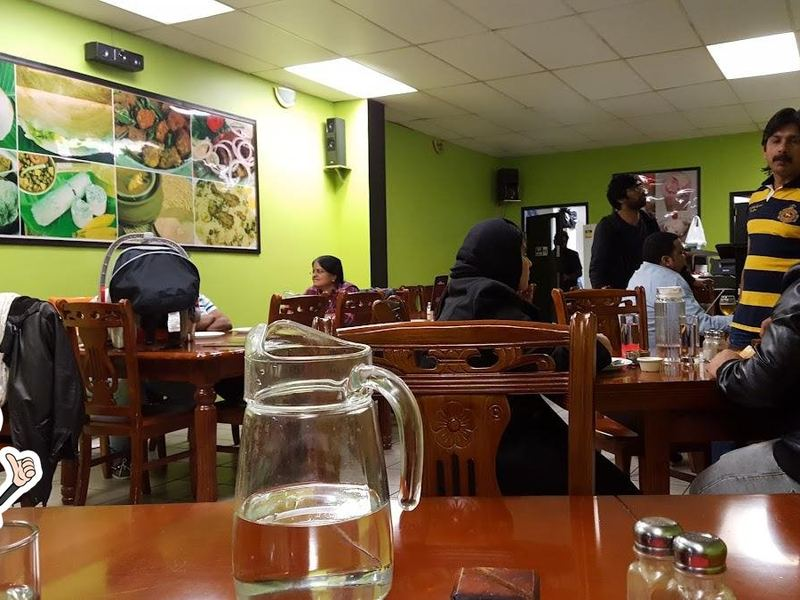
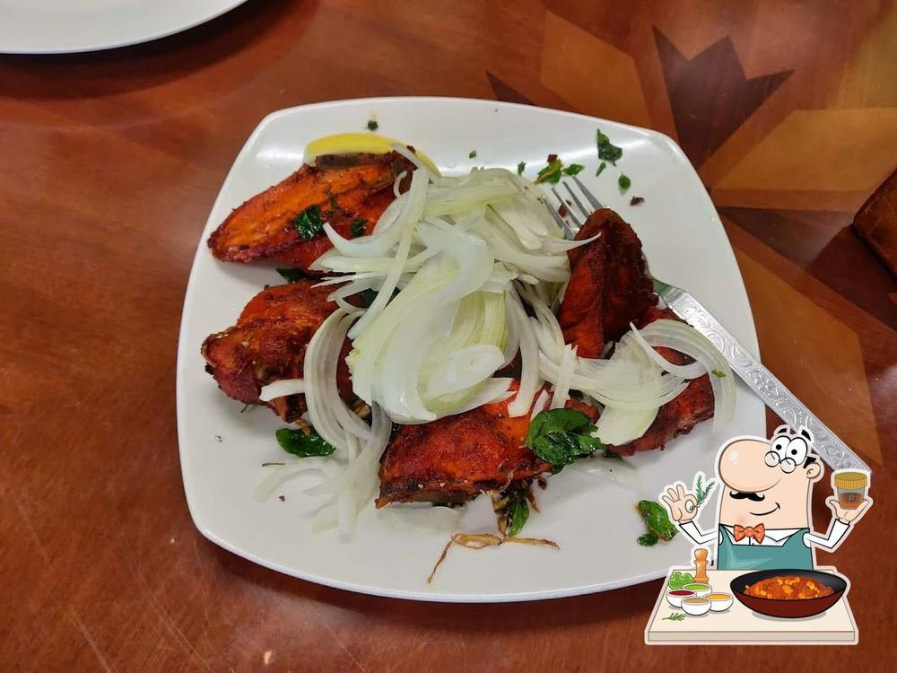

Our story
Taste the heritage
Kairali means Kerala. The kitchen cooks the food of the coast and the backwaters, for the people of Royal Oak and anyone who comes looking for it.


The kitchen
A Kerala table, set in Auckland.
The cooking is the cooking of home: coconut scraped that morning, curry leaves tempered in hot oil, fish from the morning boats rubbed with chilli and turmeric and fried to order.
We do the two ends of Kerala properly. From the north, Thalassery biryani with its short-grain kaima rice; from the south, the sadya — rice on a banana leaf with a ring of small dishes around it. In between, the coast: meen curry, pollichathu, prawn moilee, karimeen.
The restaurant is casual, the portions are generous, and the kitchen will cook a dish mild or fierce to suit you. Families, groups and functions are welcome — call ahead and we will arrange the room.
What we hold to
Three things, every day
Nothing sits under a lamp. Your curry starts when you order it, which is why it tastes the way it does.
The heat is a dial, not a dare. Say mild and it will be mild, say nadan and it will taste of Kerala.
The fish list changes with what comes in. Ask the kitchen what is good before you decide.